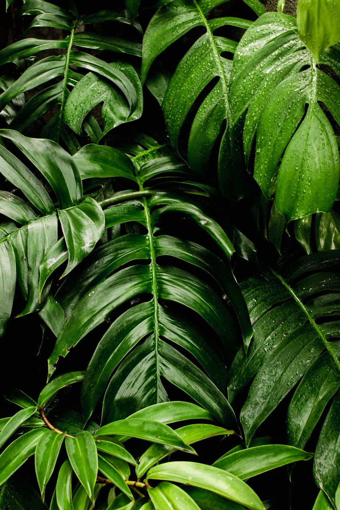
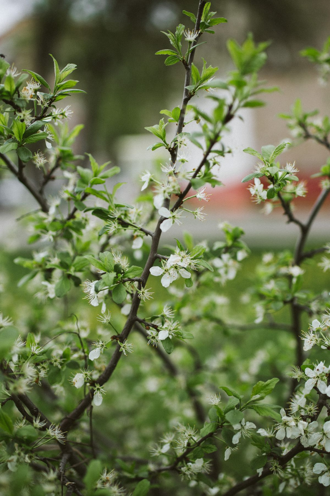
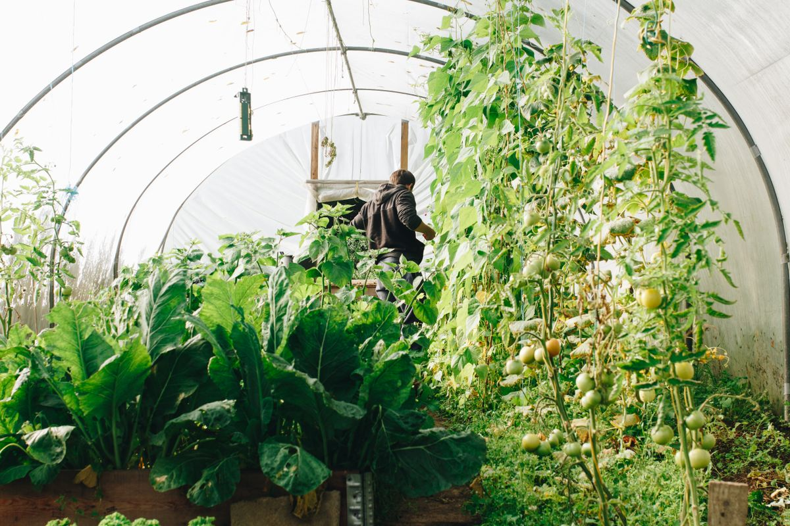
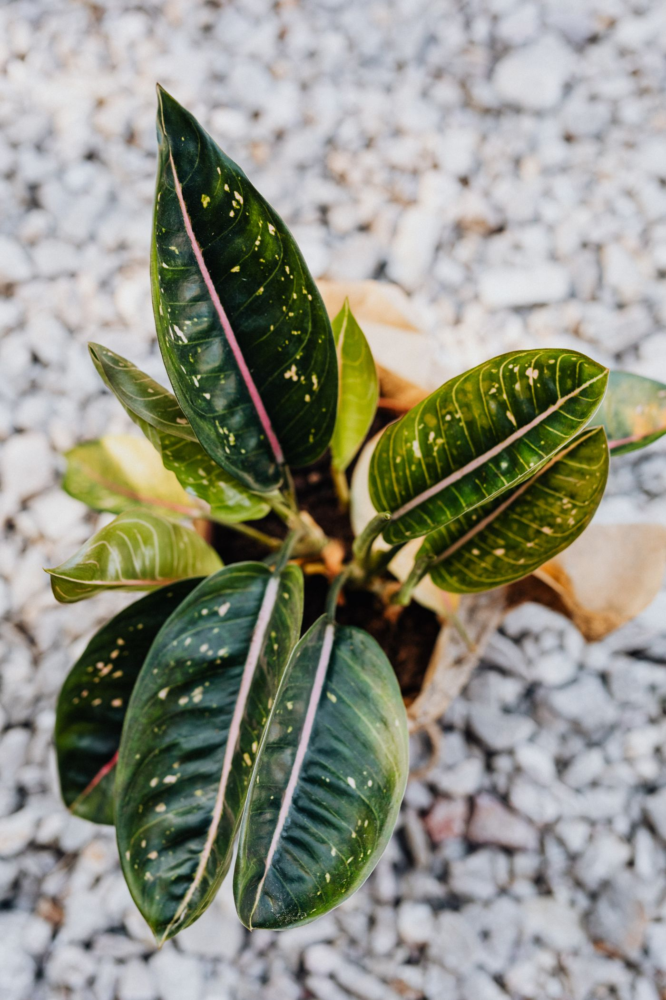
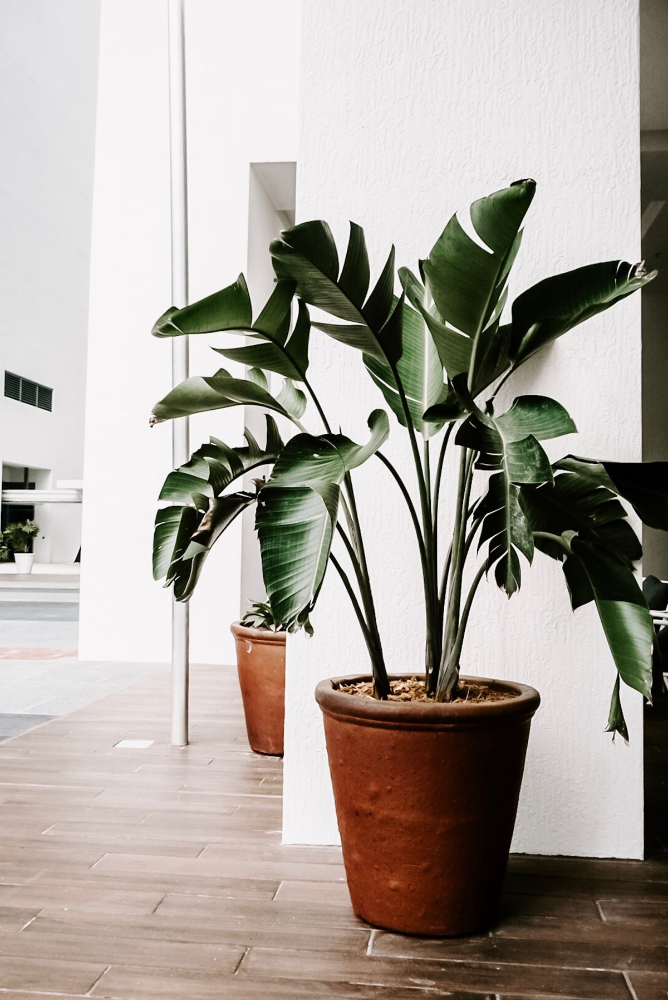
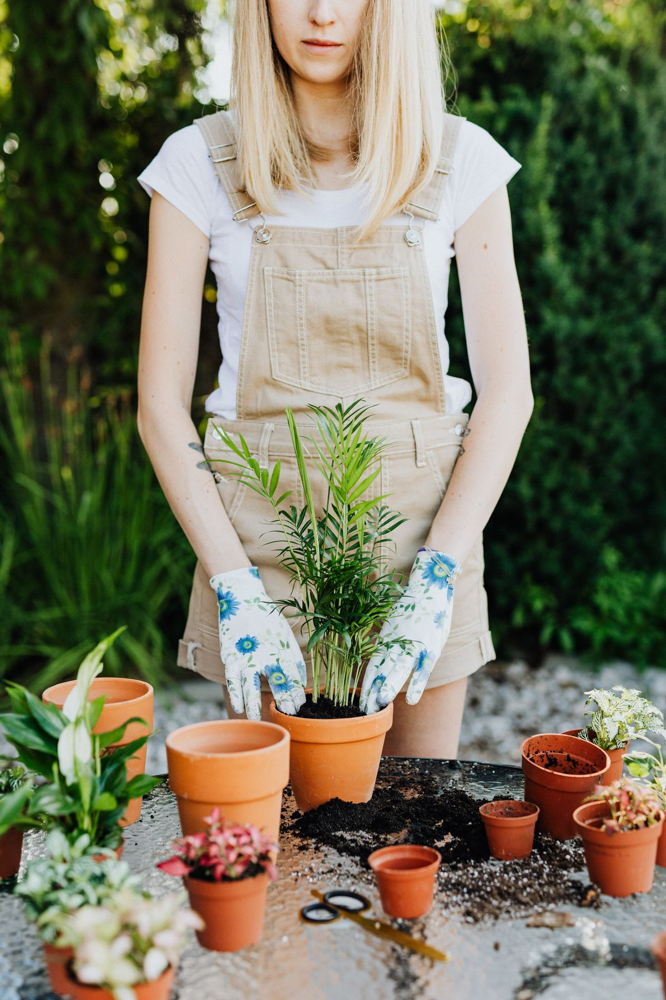

البناء الضوئي Photosynthesis
تحوّل ضوء الشمس والماء وثاني أكسيد الكربون إلى غذاء وأكسجين. Turns sunlight, water, and CO₂ into food and oxygen.
دليل نباتي تفاعلي · ثمانية فصول An interactive botanical field guide · 8 chapters
رحلة بصرية هادئة بين الأوراق والجذور والزهور. تعلّم كيف تنمو النباتات، وما تحتاجه لتعيش، وكيف نعتني بها — بلغة بسيطة وتصميم يشبه الطبيعة. A slow visual journey through leaves, roots, and flowers. Learn how plants grow, what they need to thrive, and how to care for them — in a language as gentle as nature itself.

كل ورقة تحكي قصة،
وكل جذر يبدأ حكاية.
Every leaf tells a story.
Every root begins one.

مقدمة عن النباتات Introduction to plants
من الطحالب الدقيقة إلى الأشجار العالية، تشكّل النباتات أساس الحياة على الأرض. إنها تصنع غذاءها بنفسها، وتعيد إلى الهواء ما نحتاجه لنتنفس. From microscopic algae to towering trees, plants form the foundation of life on Earth. They make their own food and return to the air what we need to breathe.
النباتات كائنات حية متعددة الخلايا، توجد في الماء وعلى اليابسة، وتصنع غذاءها غالبًا عبر البناء الضوئي باستخدام ضوء الشمس. وتتميز بجدران خلوية من السليلوز، وبقدرتها على النمو والتكيّف مع بيئتها. Plants are multicellular living organisms found on land and in water. Most make their own food through photosynthesis, using sunlight, water, and carbon dioxide. Their cells have cellulose walls, and they grow and adapt throughout their lives.
تحوّل ضوء الشمس والماء وثاني أكسيد الكربون إلى غذاء وأكسجين. Turns sunlight, water, and CO₂ into food and oxygen.
يمنح الخلايا النباتية دعامة وشكلًا مميزًا. Give plant cells structure and support.
تنمو طوال حياتها وتتأقلم مع الضوء والحرارة والتربة. Plants keep growing and adjust to light, temperature, and soil.
تتكاثر بالبذور أو الأبواغ أو الأجزاء الخضرية. Through seeds, spores, or vegetative parts.

النباتات لا تنتج الغذاء فحسب؛ إنها تصنع الهواء الذي نتنفسه. Plants do more than make food; they make the air we breathe.
أنواع النباتات Types of plants
تختلف النباتات في الشكل والحجم والاحتياجات، لكنها تشترك جميعها في رحلة البحث عن الضوء والماء. تعرّف على أربع عائلات نباتية من حولنا. Plants differ in shape, size, and needs — yet all are on the same search for light and water. Meet four plant families from around us.
اضغط على أي بطاقة لكشف احتياجاتها وأمثلتها. Tap any card to reveal its needs and examples.
أجزاء النبات Parts of a plant
خمسة أجزاء تتكامل في نظام واحد: الجذور تُثبّت، والساق تنقل، والأوراق تصنع الغذاء، والزهرة تكمل الحكاية، والثمرة تحفظ البداية. Five parts, one living system: roots anchor, the stem transports, leaves make food, flowers continue the story, and fruits protect its beginning.

اضغط على أي نقطة مرقمة في الرسم. Tap any numbered point on the illustration.
احتياجات النباتات Plant needs
ليست العناية وصفة واحدة للجميع، لكن أربعة عناصر أساسية تصنع الفرق بين نبتة باقية ونبتة مزدهرة. Care is not one recipe for every plant, but four essentials make the difference between surviving and flourishing.

“أفضل النباتات ليست تلك التي تُسقى أكثر، بل تلك التي تُفهم أكثر. The best-kept plants are not watered most; they are understood best.
اضغط على أي بطاقة لكشف نصيحة عملية. Tap any card to reveal a practical tip.
العناية بالنباتات Plant care
لا تحتاج النباتات إلى عناية مثالية، بل إلى روتين ثابت وملاحظة هادئة. ابدأ بأساسيات الري والتغذية والمراقبة، وستتعلّم النبتة أن تكافئك بالنمو. Plants don’t need perfection — they need a steady rhythm and a quiet eye. Start with watering, feeding, and observation, and they will answer with growth.

راقب قبل أن تعالج.Observe before you treat. لكل نوع إيقاعه؛ اقرأ احتياجاته قبل أن تضع له جدولًا. Every plant has its own rhythm. Learn its needs before setting a schedule.
علّم المهام المنجزة — تُحفظ تلقائيًا في متصفحك. Tick what you’ve done — your progress is saved in this browser.
أحسنت! نبتتك ممتنة لعنايتك. Lovely. Your plant is grateful for the care.
عندما تجف الطبقة العلوية 2–3 سم، اسقِ حتى يخرج الماء من فتحة التصريف.When the top 2–3 cm is dry, water until it drains from the pot.
مرة شهريًا في الربيع والصيف، وقلّل أو أوقف في الشتاء حسب نوع النبتة.Once a month in spring and summer; reduce or pause in winter, depending on the plant.
أزل الأجزاء الميتة بلطف لتوجيه الطاقة نحو نمو جديد.Gently remove dead growth to direct energy into new leaves.
الأوراق الشاحبة أو الأطراف البنية رسائل مبكرة؛ عالج السبب لا العَرَض.Pale leaves or brown edges are early messages. Treat the cause, not only the symptom.
أهمية النباتات The importance of plants
النباتات ليست مشهدًا خلفيًا لحياتنا. إنها تصنع الهواء والغذاء والظل، وتحمي التربة والمياه، وتمنح العالم توازنه. Plants are not the backdrop of our lives. They make the air, food, and shade we rely on, protect soil and water, and hold the living world in balance.
حيث تزدهر الغابات،
تتبعها الحياة.
Where forests thrive,
life follows.
تنتج الأكسجين وترشّح بعض الملوثات من الهواء.They release oxygen and filter some pollutants from the air.
توفّر الحبوب والفواكه والخضروات، وهي مصدر لكثير من الأدوية.They give us grains, fruits, and vegetables, and source many medicines.
تخزّن الكربون، وتلطّف المدن، وتحمي التربة من الانجراف.They store carbon, cool cities, and protect soil from erosion.
توفّر موائل وغذاءً ومأوى لعدد هائل من الكائنات.They provide habitat, food, and shelter for countless living things.
أرقام تقريبية استنادًا إلى تقديرات منظمة الأغذية والزراعة (FAO). حفظ الغابات القائمة يبقى الخطوة الأولى. Approximate figures based on FAO estimates. Protecting existing forests remains the first step.
الخاتمة Conclusion
كل نبتة نعتني بها هي قرار صغير لصالح عالم أكثر صحة. ابدأ بما تستطيع: ماء أقل هدرًا، نبتة محلية، ومساحة خضراء تبقى. Every plant we care for is a small decision for a healthier world. Start with what you can: less wasted water, a native plant, a green space left intact.
“الأرض لا تحتاج إلى أبطال؛ تحتاج إلى أيدٍ تعتني. The Earth doesn’t need heroes. It needs hands that care.
العالم يصبح أخضر
حين نعتني به.
The world grows greener
when we tend to it.